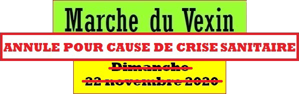
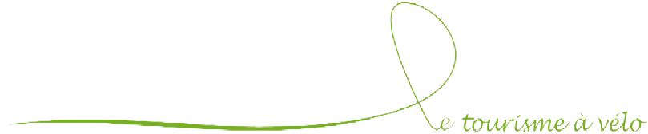

Actualités à voir, présentes et passées:

Contact
Valérie RICHARD
CHemin Gaillard
78250 Oinville sur Montcient
tél. : 01 34 75 44 95 – 06 09 74 80 24
Aimeriez vous ?
- Ressentir cette sensation de liberté que procure la pratique de la bicyclette ?
- Découvrir les trésors touristiques et/ou culturels de votre région ?
- Partir en balade sur les routes et les chemins tranquilles du Vexin pour quelques heures, ou, plus, sur la journée avec arrêt pique-nique ou restaurant, ou, encore plus, sur le week-end avec hébergement en camping ou en gîte ?
- Pratiquer l'endurance en randonnant sur de longues distances en partant à l'aube et en arrivant au crépuscule, voire même en roulant de nuit ?
- Voyager de plusieurs jours à plusieurs mois en itinérance à travers la France ou le monde, avec ses bagages et même sa tente sur sa bicyclette ?
En résumé, aimeriez-vous le Cyclo-Tourisme ?
Si oui, le Cyclo-Club du Vexin est là et vous acceuille de 7 à 77 ans et plus !
Cyclo-tourisme = utilisation de la bicyclette comme moyen, dans le but de faire du tourisme.
